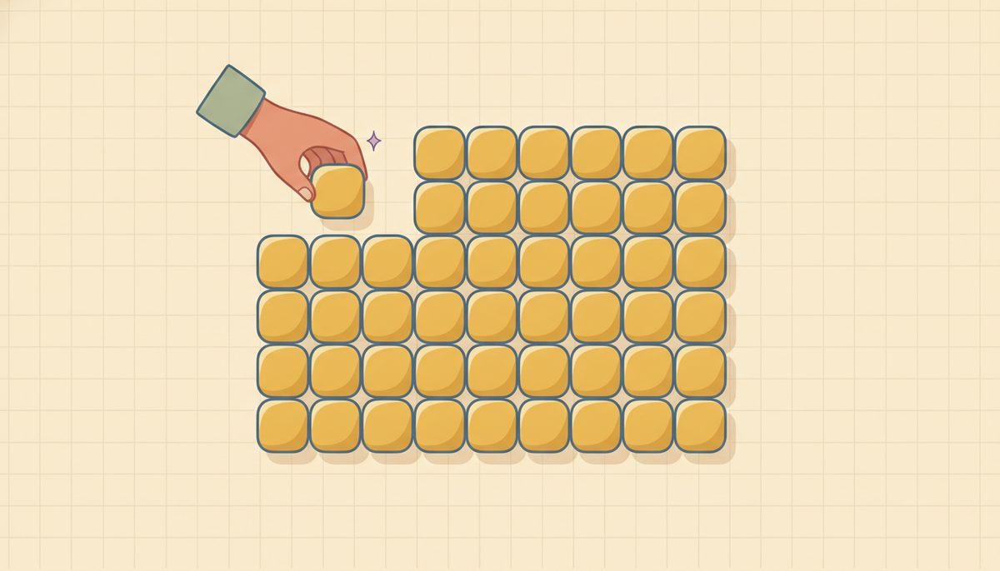

Factoring trinomials x²+bx+c

This is the lesson the unit builds toward, so give it the most time. It's the exact reverse of multiplying two binomials in Unit 10, and it's the move that makes solving quadratics in Unit 12 possible. Once you can turn x²+5x+6 into (x+2)(x+3), setting it equal to zero and reading off the answers is one short step away.
Picture the area box from Unit 10 again, but backward. When you multiplied (x+2)(x+3), the box filled in: the corner cells came out x² and 6, and the two middle cells, 2x and 3x, added to 5x. Factoring runs that in reverse. Now you're handed the inside of the box, with the x², the middle, and the corner, and you have to find the edges:
$$\begin{array}{c|c|c} & x & \,? \\ \hline x & x^2 & ?x \\ \hline ? & ?x & 6 \end{array}$$
The two unknown edges have to multiply to 6 (that's the corner cell), and their x-terms have to add to 5x (that's the middle). Which is exactly one question, and it's the question behind every trinomial: what two numbers multiply to c and add to b?
So the method is a search for two numbers. List the pairs that multiply to c, and pick the pair that adds to b. For x²+5x+6, the pairs multiplying to 6 are 1·6 and 2·3; only 2 + 3 gives 5. So the factors are (x+2)(x+3).
The part that takes real care is the signs, and they aren't a guess: the signs of c and b tell you the signs of the two numbers. Here's how to read them. Look first at c.
When c is positive, the two numbers have the same sign, because their product came out positive. Then b breaks the tie: if b is positive too, both numbers are positive, and if b is negative, both are negative.
When c is negative, the two numbers have opposite signs, because their product is negative. Then the number with the larger size carries the sign of b.
Take the signs slowly, in that order: c first, then b. And if one slips, the multiply-back check catches it, since the middle term comes out wrong.
| signs | c | b | the two numbers | example |
|---|---|---|---|---|
| both + | + | + | both positive | x^2+5x+6=(x+2)(x+3) |
| both - | + | - | both negative | x^2-5x+6=(x-2)(x-3) |
| opposite, sum + | - | + | bigger one positive | x^2+x-6=(x+3)(x-2) |
| opposite, sum - | - | - | bigger one negative | x^2-x-6=(x-3)(x+2) |
New words
- 11.2.d1 Trinomial: a polynomial with three unlike terms (after combining like terms), here x²+bx+c: a squared term, an x term, and a constant.
- 11.2.d2 Prime (irreducible over the integers): a trinomial that cannot be written as a product of two binomials with integer coefficients. When the two-number search comes up empty, the trinomial is prime. That's a real answer, not a failure.
- 11.2.d3 Monic: leading coefficient 1, i.e. the x² has no number in front (just x², not 3x²). Every trinomial in this lesson is monic. Trinomials like 2x²+7x+3, where the leading coefficient is not 1, factor by an extension of this method covered later.
These cover all four sign cases. The check on each is just a Unit 10 expansion, run back to front.
Worked example
(covering all sign cases; each checked by expanding back):
Both positive (c>0, b>0): 11.2.w1 $$x^2+5x+6=(x+2)(x+3) \qquad \text{Check: } x^2+3x+2x+6 = x^2+5x+6$$ (2·3=6, 2+3=5.)
Both negative (c>0, b<0): 11.2.w2 $$x^2-5x+6=(x-2)(x-3) \qquad \text{Check: } x^2-3x-2x+6 = x^2-5x+6$$ (c is positive, so same sign; b is negative, so both negative. (−2)(−3)=6, and (−2)+(−3)=−5.)
Opposite signs, sum positive (c<0, b>0): 11.2.w3 $$x^2+x-6=(x+3)(x-2) \qquad \text{Check: } x^2-2x+3x-6 = x^2+x-6$$ (c is negative, so opposite signs; you need a product of −6 and a sum of +1, which is +3 and −2.)
Opposite signs, sum negative (c<0, b<0): 11.2.w4 $$x^2-x-6=(x-3)(x+2) \qquad \text{Check: } x^2+2x-3x-6 = x^2-x-6$$ (Opposite signs again; product −6, sum −1, so the bigger number, 3, is the negative one.)
A bigger both-positive one: 11.2.w5 $$x^2+7x+12=(x+3)(x+4) \qquad \text{Check: } x^2+4x+3x+12 = x^2+7x+12$$ (Pairs of 12: 1·12, 2·6, 3·4; only 3 + 4 gives 7.)
Opposite signs, larger gap: 11.2.w6 $$x^2-2x-15=(x-5)(x+3) \qquad \text{Check: } x^2+3x-5x-15 = x^2-2x-15$$ (Product −15, sum −2, so −5 and +3; the bigger one, 5, is negative because b is negative.)
With a few correct ones behind you, here's a slip that's easy to make. The mix-up is reasoning the signs backward: writing x²−5x+6 as (x+2)(x+3) when both numbers should be negative, or putting the minus on the wrong number in x²+x−6. When this happens, the multiply-back check gives the wrong middle term, which is your signal.
To set it right, walk the signs again in order: is c positive or negative, so same sign or opposite? Then which sign does b force? A close cousin is swapping the targets, hunting for numbers that add to c and multiply to b. The constant sitting on its own is always the product target; b is the sum.
When nothing fits: prime trinomials
Not every trinomial factors over the integers, and saying so plainly matters, because the alternative is hunting forever for an answer that isn't there. The two-number search has a finite list to check, just the factor pairs of c, so it can genuinely run out. When it does, the trinomial is prime, and that's the correct, complete answer, not a sign you failed.
Here's the rule that tells you when to stop. To factor x²+bx+c, list every integer pair that multiplies to c, then check each pair's sum against b. If no pair sums to b, stop: the trinomial is prime (irreducible over the integers). Working through the whole list is the proof. It's the same "I actually checked" spirit as multiplying back, turned on the search itself. The key is that the list has to be exhausted: you've earned the word "prime" only after every pair has been tried, including the negative pairs when the signs call for them.
A prime one (c>0, b>0): 11.2.w7 $$x^2+2x+5 \;\Rightarrow\; \text{prime (irreducible over the integers)}$$ Since c = 5 is positive, the two numbers would share a sign, and since b is positive, both would be positive. The only positive pair multiplying to 5 is 1·5, and that sums to 6, not 2. There's no other pair. The search is exhausted, so it's prime. There's nothing to multiply back here, and that's fine, because the finished list is the proof.
Another prime one: 11.2.w8 $$x^2+x+1 \;\Rightarrow\; \text{prime (irreducible over the integers)}$$ Here c = 1 and b = 1. The only integer pairs multiplying to 1 are 1·1 (sum 2) and (−1)(−1) (sum −2); neither sums to 1. List exhausted, so it's prime.
Two honest cautions about "prime." First, "prime" doesn't mean "I gave up." It means you finished a finite search and it came up empty, so always list the pairs and read off the sums, the way the examples above do.
Second, don't reach for non-integers to rescue a near-miss. You might notice that x²+5x+9 almost works and feel tempted to try fractions or decimals. Hold the line: over the integers it's prime, full stop. Other tools for these come in Unit 12.
And one trap that hides a prime answer: a GCF can disguise things. Take 2x²+4x+10. As written it looks unfactorable, but it isn't prime. Pull the 2 out first to get 2(x²+2x+5), and then the inside, x²+2x+5, is prime. So "factor completely" here means 2(x²+2x+5): the GCF out front, the prime piece left intact.
This is the reason for a habit worth adopting now: always try the GCF before the two-number search. Pulling the shared factor leaves a smaller, friendlier trinomial inside, and it keeps you from wrongly calling something prime.
A couple more places people stumble, both caught by the same multiply-back habit. One is declaring "prime" too soon: quitting after one or two pairs instead of all of them, or forgetting the negative pairs when c is positive and b is negative. Only an exhausted list earns the word.
The other is skipping the check entirely, accepting, say, (x+2)(x+3) for x²+6x+6 without expanding. Always multiply back, because the middle term is where errors surface. (And as it happens, x²+6x+6 is itself prime: no integer pair multiplies to 6 and adds to 6.)
If a problem still isn't landing after you've walked the signs and the pairs, it's fine to leave it and come back tomorrow. A break genuinely helps, and you haven't lost anything. When you return, re-read the area-box picture at the top of the lesson first; that's the version of this idea everything else is built on.
Check yourself
- 11.2.c1 Factor x²+8x+15, and say why both numbers are positive. (The pairs of 15 are 1·15 and 3·5; only 3 + 5 gives 8, so it's (x+3)(x+5). Both numbers are positive because c is positive, so they share a sign, and b is positive too, which forces both to be positive.)
- 11.2.c2 What changes between x²+2x−8 and x²−2x−8? Factor both. (Both have c negative, so opposite signs; the pair is 4 and 2. The sign of b decides which one is negative: x²+2x−8=(x+4)(x−2), and x²−2x−8=(x−4)(x+2). Flipping b's sign flips which number carries the minus.)
- 11.2.c3 Someone says x²−7x+12=(x+3)(x+4). Multiply it back. What's wrong, and what's the fix? (Multiplying back gives x²+7x+12, a +7x where you need −7x. Since c is positive and b is negative, both factors should be negative: (x−3)(x−4).)
- 11.2.c4 Is x²+3x+5 factorable over the integers? List the pairs out loud and decide. (The only pair multiplying to 5 is 1·5, which sums to 6, not 3, and there's no other pair. The list is exhausted, so it's prime.)
You can now factor a monic trinomial by finding the two numbers that multiply to c and add to b, reason out their signs from the signs of c and b, and recognize honestly when a trinomial is prime. And you can confirm every answer by multiplying it back.
Both positive (c>0, b>0):
Reveal answer to problem 1
(x+2)(x+3)Reveal answer to problem 2
(x+2)(x+5)Reveal answer to problem 3
(x+3)(x+5)Reveal answer to problem 4
(x+4)(x+5)Both negative (c>0, b<0):
Reveal answer to problem 5
(x-2)(x-3)Reveal answer to problem 6
(x-3)(x-4)Reveal answer to problem 7
(x-3)(x-5)Reveal answer to problem 8
(x-2)(x-4)Opposite signs, sum positive (c<0, b>0):
Reveal answer to problem 9
(x+3)(x-2)Reveal answer to problem 10
(x+4)(x-2)Reveal answer to problem 11
(x+5)(x-2)Opposite signs, sum negative (c<0, b<0):
Reveal answer to problem 12
(x-3)(x+2)Reveal answer to problem 13
(x-5)(x+3)Reveal answer to problem 14
(x-6)(x+2)Factorable or prime? (decide for each; some don't factor over the integers):
Reveal answer to problem 15
(x+3)(x+7)Reveal answer to problem 16
prime (irreducible over the integers)Reveal answer to problem 17
(x-4)(x+3)Reveal answer to problem 18
prime (irreducible over the integers)Reveal answer to problem 19
(x+1)(x+3)Reveal answer to problem 20
prime (irreducible over the integers)Reveal answer to problem 21
(x-3)(x-6)Reveal answer to problem 22
prime (irreducible over the integers)Sign spot-checks: #5: (-2)(-3)=6, (-2)+(-3)=-5. #11: (+5)(-2)=-10, 5+(-2)=+3. #14: (-6)(+2)=-12, -6+2=-4. Prime spot-checks (show the search is exhausted): #16 pairs of 1: 1+1=2, (-1)+(-1)=-2 — neither is 1. #18 pairs of 5: 1+5=6 — not 2. #20 pairs of 5: 1+5=6 — not 3. #22 c=10, b=-3 needs a negative pair: -1-10=-11, -2-5=-7 — neither is -3.